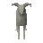

Mountain Goat

| Config name | mountain_goat2 |
| NPC id | 1094 |
| Combat level | hidden |
| Wander range | 2 tiles from spawn |
| Defined in | scripts/quests/quest_death/configs/quest_death.npc |
Mountain Goat
This beast doesn't need climbing boots.
Show all 2 spawns on the world map → Open in knowledge graph →
Locations
| Area | Coordinates | Level | Count | Map |
|---|---|---|---|---|
| Death Plateau | 2832, 3597 | 0 | 1 | view |
| Death Plateau | 2856, 3610 | 0 | 1 | view |